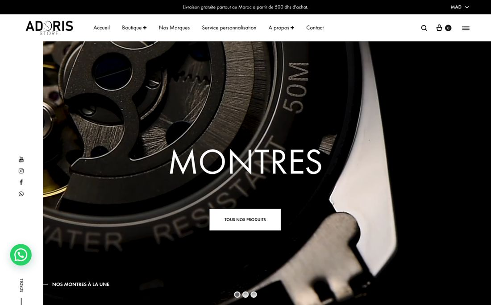
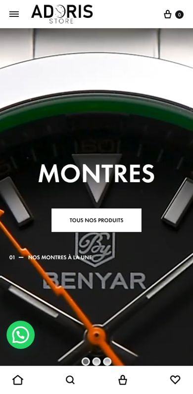
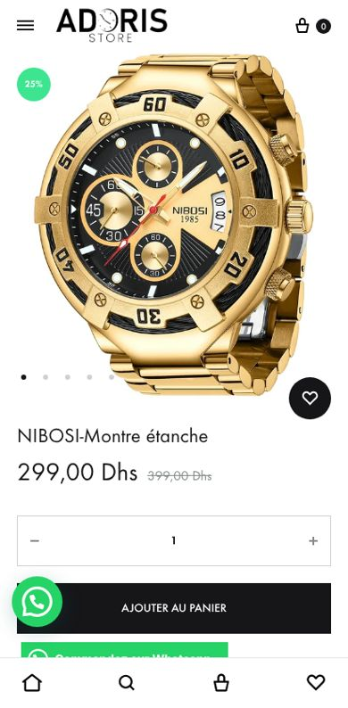
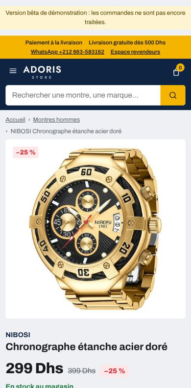
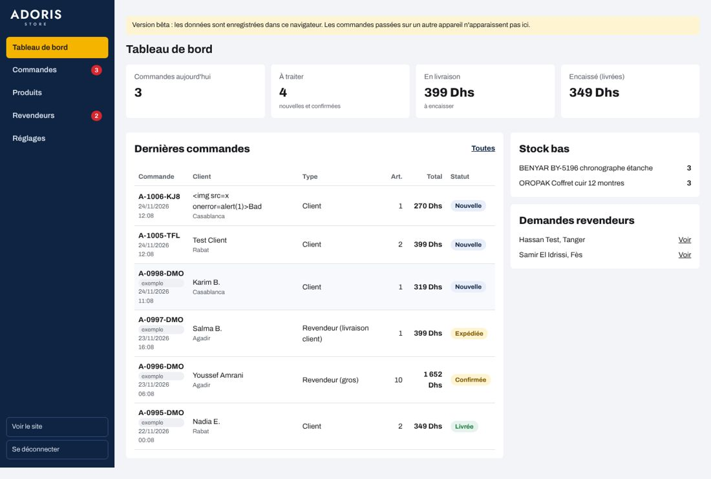
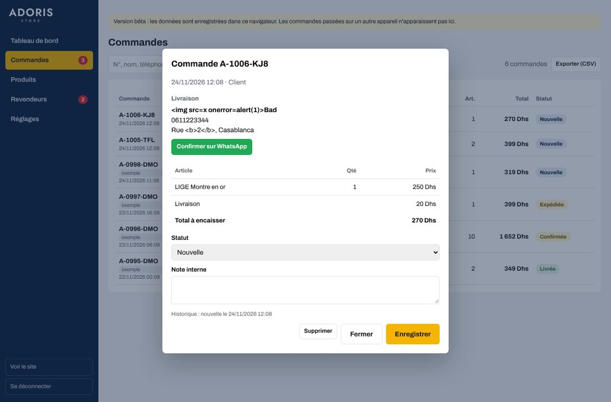
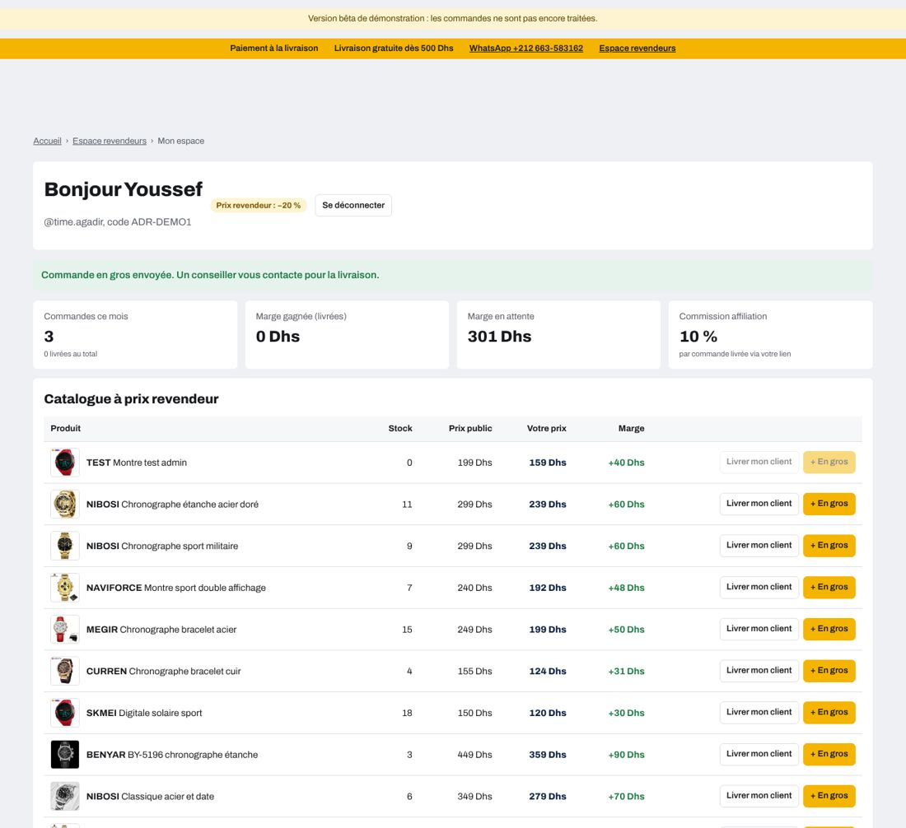

Comparaison entre le site actuel adoristore.ma et la nouvelle version bêta (shadowsdevmorocco.github.io/adoris-store), mesurés le même jour, depuis le même endroit, sur un téléphone simulé.

Site actuel : vidéo plein écran, aucun produit ni prix visible.
Nouveau site : recherche, rayons, promotions et prix dès l'ouverture.
Temps de chargement complet et poids téléchargé, sur un téléphone simulé (Pixel 7). Meilleur de deux passages pour chaque site.
| Mesure (accueil, téléphone) | Site actuel | Nouveau site |
|---|
Pendant la mesure, les scripts publicitaires et statistiques externes du site actuel (Google Tag Manager, TikTok) étaient bloqués : en conditions réelles, le site actuel est encore plus lent. Les polices du nouveau site viennent de Google Fonts.

Accueil actuel
Nouvel accueil

Fiche produit actuelle

Nouvelle fiche produit
| Point | Site actuel | Nouveau site |
|---|---|---|
| Étapes | Fiche, mini-panier, page panier, page « Checkout » | Une page : panier et adresse ensemble |
| Champs obligatoires | 5, dont l'e-mail | 4 : nom, téléphone, ville, adresse |
| Paiement | Carte cochée par défaut, bouton « Continuer sur PayPal » | Paiement à la livraison |
| Frais de livraison | Affichés seulement après la saisie de l'adresse | Affichés tout de suite, recalculés selon la ville |
| Liste des villes | Provinces (« Fahs-Beni Makada », « Marrakech-Ménara ») | Vraies villes |
| Langue | « Checkout », « Name », « Add to wishlist », « Sign in », « Toutube » | Tout en français |
| Prix | 21 prix cassés (ex. « 799.799.335.335 Dhs ») | 0 prix cassé |
| Contrôle du téléphone | Aucun | Numéro marocain vérifié |
| Gravure | Produit séparé à trouver | Case à cocher sur chaque fiche |
| Bulle flottante qui cache des boutons | Bouton sur la fiche et confirmation de commande |
Analyse de l'accueil, d'une catégorie et d'une fiche produit sur chaque site.
| Point | Site actuel | Nouveau site |
|---|---|---|
| Titre principal (H1) de l'accueil | « adoristore.ma » | « Montres à Casablanca, livrées partout au Maroc » |
| Titre de la fiche produit | « NIBOSI-Montre étanche - adoristore.ma » | Marque, modèle et prix : « … – 299 Dhs | Adoris Store » |
| Description Google des fiches | Absente | Une par produit, avec prix et livraison |
| Images sans description (accueil) | 63 sur 125 | Toutes les photos produits décrites (8 vignettes décoratives volontairement vides) |
| Données structurées | Organisation, produit, prix, fil d'Ariane (Yoast) | Magasin avec adresse et paiement à la livraison, produit, prix, stock, frais de livraison, fil d'Ariane, listes de produits, FAQ |
| Page FAQ | Non | Oui : paiement, frais, délais, gravure, revendeurs |
| Fichier pour les IA (llms.txt) | Non | Oui : résumé de la boutique et de tous les produits pour ChatGPT, Gemini, Perplexity |
| Plan du site (sitemap) | Oui | Oui |
| Scripts chargés par page | 56 à 61 | 4 |
Une page séparée, protégée par mot de passe : tableau de bord, commandes des clients et des revendeurs, changement de statut, confirmation par WhatsApp en un clic, export Excel, gestion des produits et du stock, réglages de livraison.


Les revendeurs demandent un compte, Adoris l'accepte dans l'admin et leur envoie un code. Ils voient ensuite le catalogue à leur prix, font livrer leurs clients ou commandent en gros, et suivent leurs marges.

| Point | Site actuel | Nouveau site |
|---|---|---|
| Logiciel serveur | PHP 8.1, qui ne reçoit plus de correctifs de sécurité ; versions WordPress affichées | Pages statiques : aucun logiciel serveur à mettre à jour |
| Politique de sécurité du contenu | Minimale | Stricte : seuls les scripts du site peuvent s'exécuter |
| HTTPS forcé (HSTS) | Non | Oui |
| Saisies piégées | Non testé | Testé : un nom de client contenant du code ne s'exécute pas dans l'admin |
| Formulaires | Standards | Téléphone vérifié, anti-robots, limite d'envois |
| Connexion admin | WordPress | Mot de passe chiffré, blocage après 5 essais. En bêta, la connexion est vérifiée dans le navigateur : à remplacer par un vrai serveur avant les ventes. |
Mesures du 24/11/2026 avec un navigateur Chromium (téléphone Pixel 7 simulé), depuis un serveur hors du Maroc. Site actuel : adoristore.ma. Nouveau site : shadowsdevmorocco.github.io/adoris-store.